| 日付 | 2026年8月12日（水） - 2026年8月14日（金） | ||||||
|---|---|---|---|---|---|---|---|
| 山域 | 北アルプス | ||||||
| メンバー | 家族（妻） | ||||||
| 山行形態 | 2泊3日山小屋泊 | ||||||
| アクセス | 車 | ||||||
| ルート (Map) |
|
2日目
本日は長丁場のため3時半に起床し、4時前に出発する。
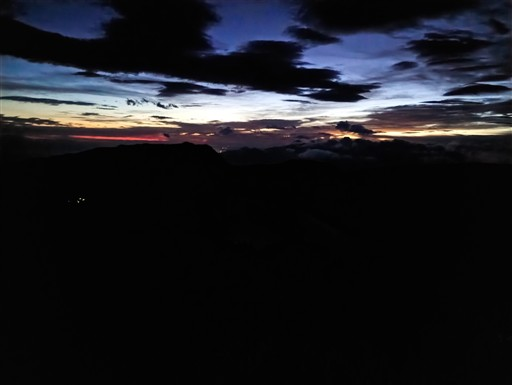
眼下に町の光が見える。
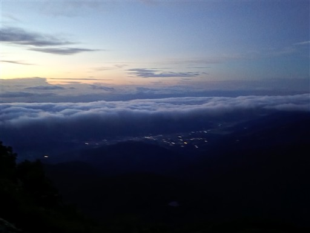
空がオレンジ色になってきた。白馬大池も視認できる。
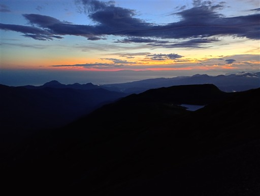
船越ノ頭に到着。
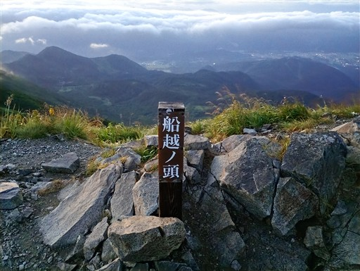
ここで日の出を待っている人がいるが、まだ20分くらいはかかりそう。
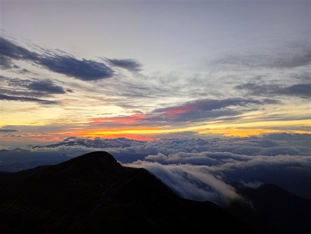
杓子岳と白馬鑓ヶ岳が見えているが白馬岳は尾根に隠されている。
待っていても時間がもったいないので先に進むことにする。
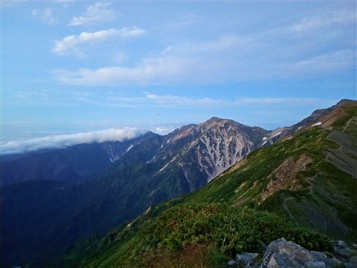
船越ノ頭に雲が昇っていく。
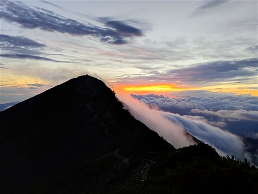
御来光。
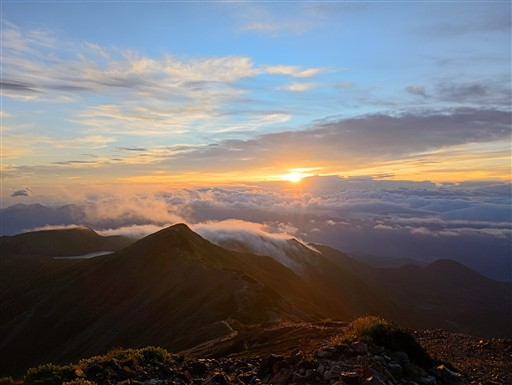
白馬岳が真っ赤に染まる。ここまで来れば白馬岳まで見えるため、先に進んでおいて良かった。
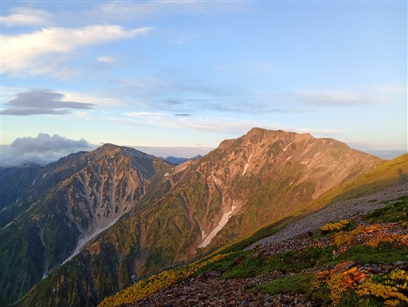
北に伸びる尾根も赤く染まっている。
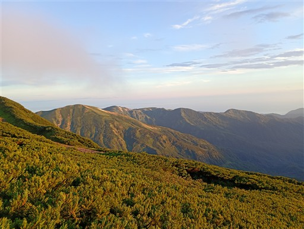
歩いている尾根も真っ赤。
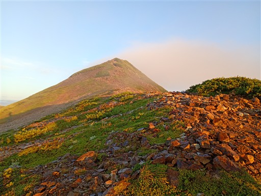
どんどん登っていく。風が強くものすごく寒い。
ハイマツ帯の中はましだが、ハイマツが無くなると強風にさらされ一気に体が冷える。
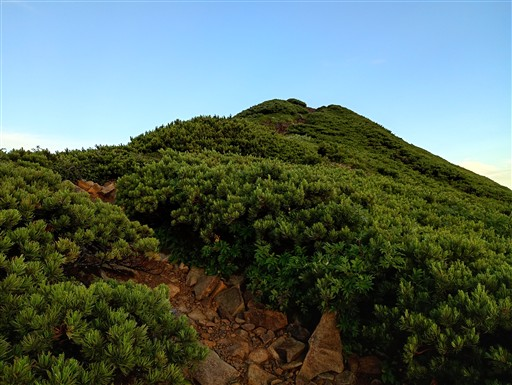
小蓮華山に到着。標高2766m。新潟県の最高峰だ。
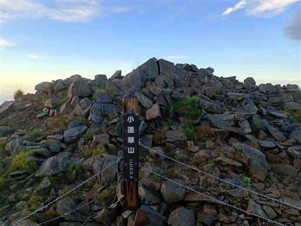
山頂には大きな剣が突き立っている。
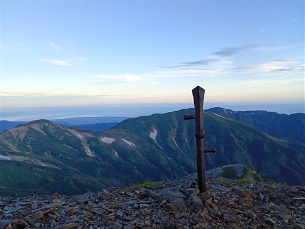
風の強い稜線を白馬岳に向かって歩く。
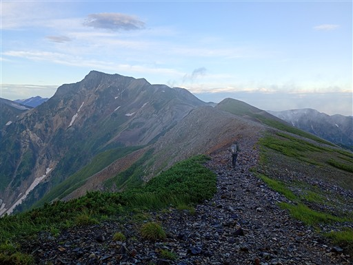
尾根を越える雲がやって来ては去っていく。
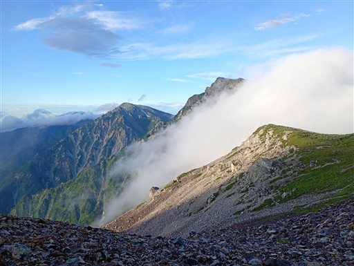
雲の中に入ると視界は完全になくなる。
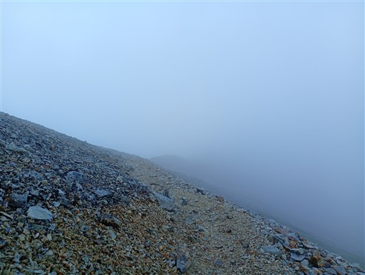
基本は晴れていて、遠くまでの大展望が広がる。
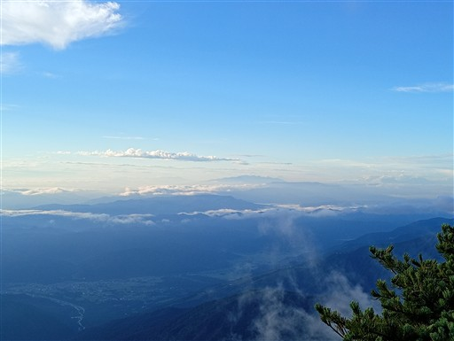
雪倉岳への道との分岐点。ここから白馬岳を往復する。
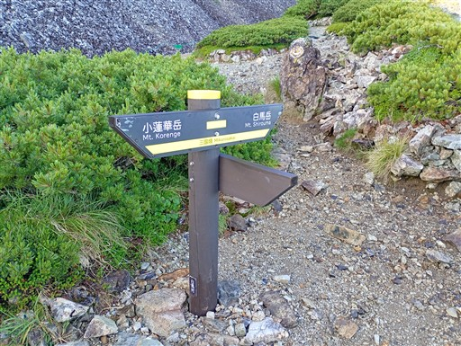
広々とした尾根が伸びている。正面右が雪倉岳、その左奥が朝日岳だ。
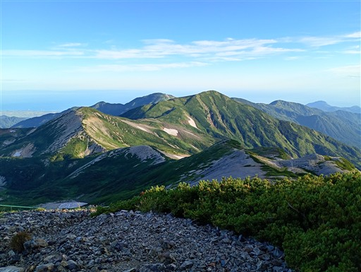
まずは白馬岳を目指す。
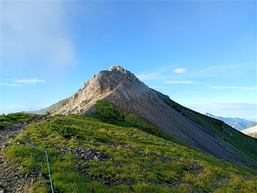
山頂直下。もうすぐそこだ。
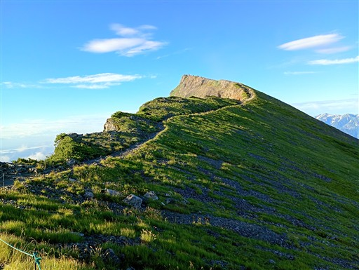
人だかりができている。
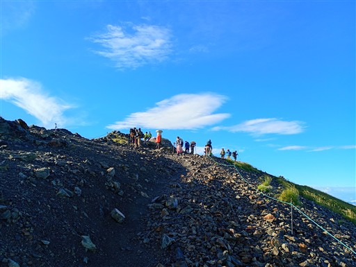
白馬岳山頂到着。標高2932m。実に19年振りの白馬岳だ。
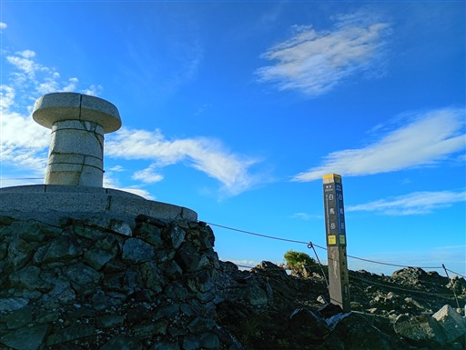
山頂からは大展望が広がる。
目の前に見えるのは立山連峰。剱岳が一際目だっている。
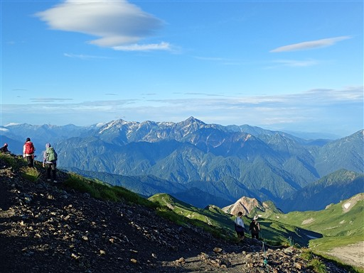
杓子岳と白馬鑓ヶ岳。巨大な白馬山荘も眼下に見える。
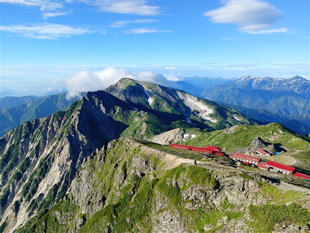
旭岳。マイナーピークだが、この山もよく目立つ。左奥は毛勝三山。
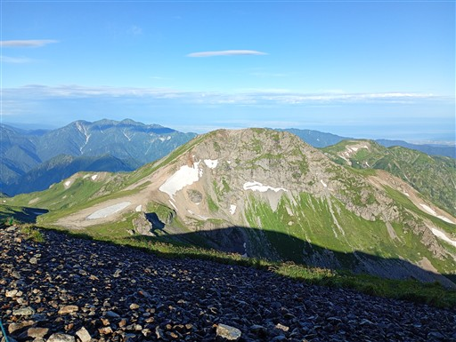
歩いてきた小蓮華山に続く尾根。かなり大きな尾根だ。
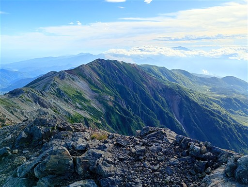
深く刻まれた谷は遥か下界まで続いている。
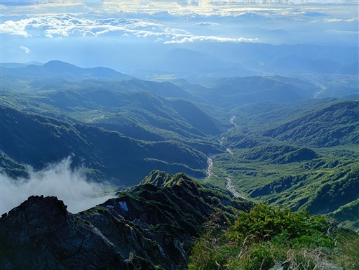
北には真青な日本海が見えている。
大展望を満喫したら山頂を出発する。
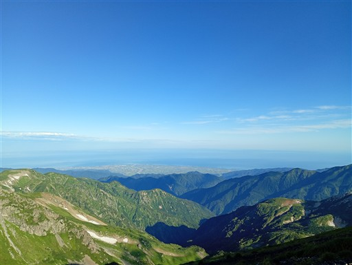
分岐点まで戻ったら、雪倉岳方面に歩を進める。
砂利が堆積した登山道を下っていく。
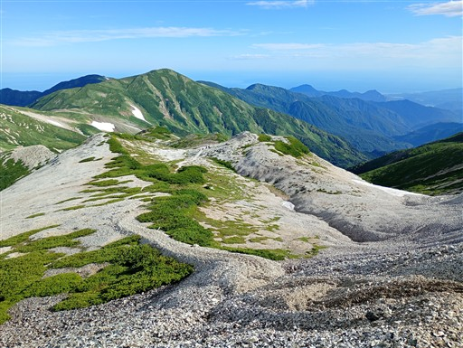
眼下に見えるのは長池。周辺は美しそうな場所だが登山道は無い。
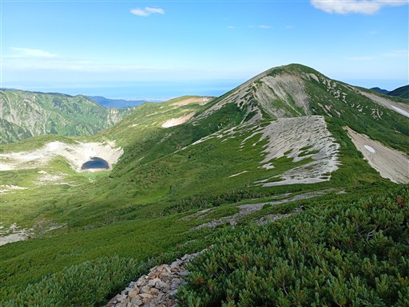
旭岳～清水岳に伸びる尾根。マイナールートだがあちらも一度歩いてみたい。
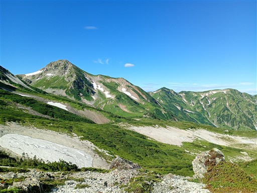
白馬岳方面はもうかなり遠くだ。一気にここまで下ってきた。
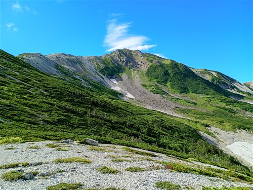
足元にコマクサが少しだけ咲いている。
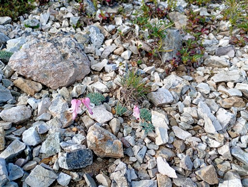
目の前に聳えるのは鉢ヶ岳。
遠くから見ると目立たないが、近づいてみると風格のある山だ。
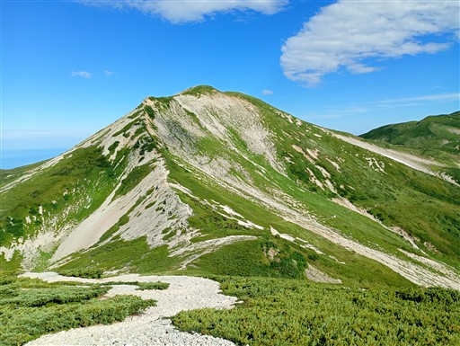
タカネマツムシソウ。この花がとにかく多くて、あちらこちらに咲いている。
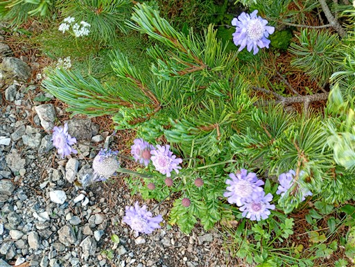
鉢ヶ岳に登ってみたかったが、尾根に通じる場所には×マークがある。
ヤマレコの地図には実線が引かれているが、これは登るな、ということなのだろう。
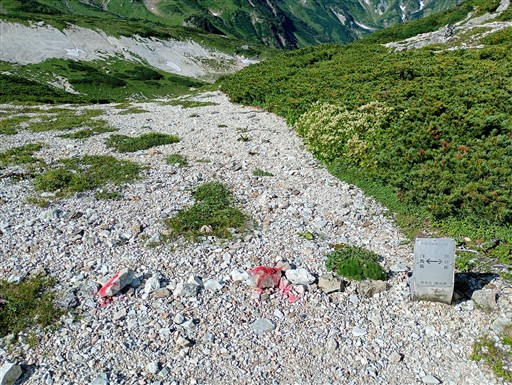
雪倉岳目指して、鉢ヶ岳のトラバース道を進む。
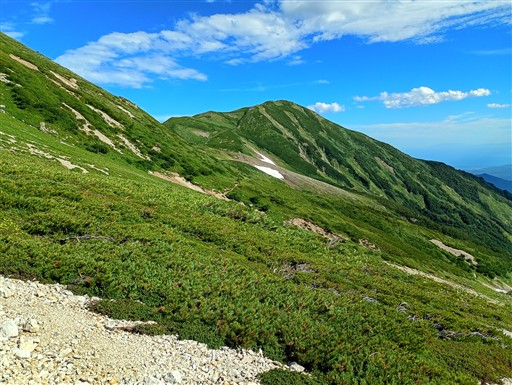
ハクサンイチゲとシナノキンバイ。
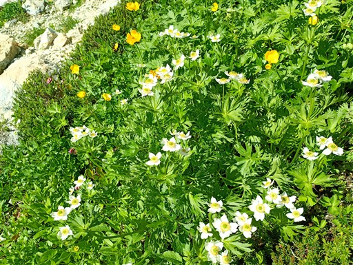
この斜面には本当に多くの花が咲いている。
イワイチョウ、ハクサンコザクラ、アオノツガザクラ、ツガザクラ、イワカガミ、ミヤマリンドウなどを見かける。
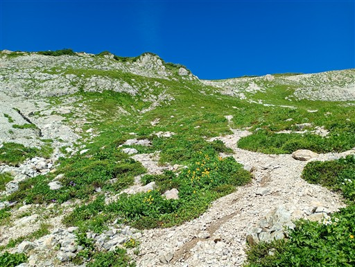
クルマユリ。この辺りで大群落を作っている。
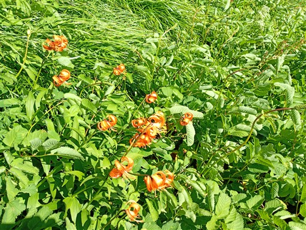
終わりかけだがコバイケイソウもポツポツ咲いている。
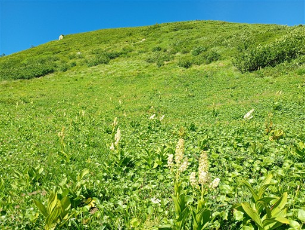
オオシラビソの黒い松ぼっくり。数が多くて非常に目立つ。
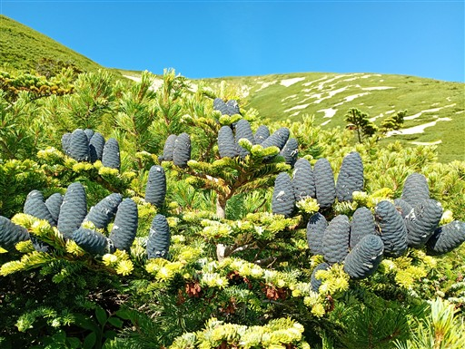
花畑が広がる、まるで天国のような道だ。
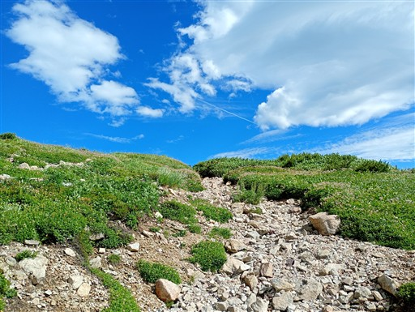
ミヤマタネツケバナ。登山道の岩の隙間にチョコチョコと咲いている。
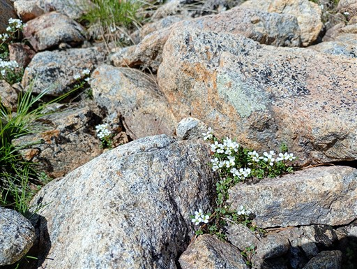
チングルマもまだ少しだけ咲いている。
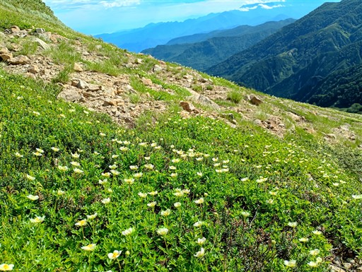
雪倉岳が目の前に横たわっている。何とも取り留めのない姿だ。
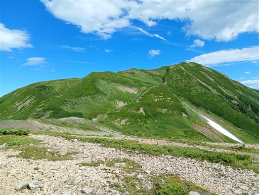
頚城山塊の山々が見えている。妙高山、火打山、焼山、手前には雨飾山が見える。
左のギザギザの稜線にも興味がある。鋸岳の辺りだろうか？
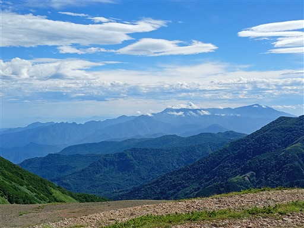
登山道脇に咲くカライトソウ。この花もよく見かける。
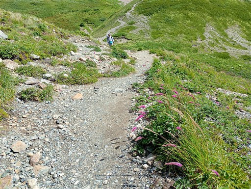
雪倉岳避難小屋。長い稜線の間にある貴重な避難小屋だ。
イワベンケイ。
様々な花が点々と咲いている。
カンチコウゾリナ。一見タンポポかと思った。
ハクサンシャジン。多くの花を付けている。
タカネイブキボウフウ？セリ科は同定が困難。
お花を眺めながら登っていると雪倉岳山頂に到着する。標高2611m。
山頂からの展望。白馬岳と旭岳。
マーブル模様のように、様々な色が入り混じっている。
雪倉岳でお弁当を食べたら、朝日小屋に向かって進む。
朝日岳自体は本日は登らず、明日登る予定だ。
この辺りはすこし岩がちな地形だ。
眼下に見えているのは雪倉池。
キンコウカとイワショウブ。
この辺りは尾根を外れて右側から回り込んでいる。
あの崖を歩くのが困難だからだろう。
ミヤマシシウド。かなり大柄な花。
シロウマアサツキ。
標高を下げていくと、赤男山が目立ってくる。
この山には登山道が無く、左から巻いていく。
一面緑色の景色。山が深い。
巻道に入ると登山道は樹林帯の中になる。
ガレ場を通過。赤男山の斜面が崩壊していた場所だ。
大量の石が堆積している。急斜面でこちらに落ちてきそうだ。
サッと通り過ぎる。
湿原地帯になり、木道歩きになる。
この辺りはハクサンフウロが多い。
池塘広がる湿原。赤男山を過ぎ、朝日岳が近づいてきた。
ミズバショウの残骸。
この辺りは枯木が目立っている。
ようやく朝日岳との分岐点に到着する。
朝日岳は明日登るとして、水平道から朝日小屋を目指す。
朝日岳をトラバースする木道が続く。
こんな時期にスミレの花が咲いている。ミヤマツボスミレだろうか。
ミズバショウロード。
キヌガサソウ。残念ながら花はもう終わっている。
この花は長らく見ていない。
笹が刈り払われている。ありがたいことだ。
地面に散乱している茎はかなり太く、この辺りの笹はかなり頑丈なようだ。
ミヤマキンポウゲのお花畑。奥の白い花はモミジカラマツなど。
この池の近くにサルがいたのだが、自分たちが近づくと逃げて行った。
写真ではよく分からないが、木の中から一匹のサルが顔を出してこちらを伺っている。
登山道が険しくなってくる。そして登りがかなりある。
水平道とは名ばかりだ。
朝日小屋の三角屋根が見えてきた。
小屋に水を引くためのホース。踏まないように注意して歩く。
朝日岳からの道と合流する。小屋まであと僅かだ。
朝日小屋が近づいてきた。美しい場所に立つ小屋だ。
朝日小屋に到着。かなりのロングコースだった。
小屋は3階の部屋を割り当てられる。ペアが3組で広々だ。
外では子供たちが遊んでいる。
かなり雲が増えたが、雪倉岳、白馬岳、旭岳が見えている。
この辺りは朝日平と呼ばれていて池塘が広がっている。
奥の方に行くとチングルマが咲いている。
ニッコウキスゲは少しだけ。
カライトソウはあちらこちらに咲いている。
シロバナニガナもたくさん咲いている。
キンコウカ、イワショウブ、ヒオウギアヤメなどなど花はたくさん。
朝日平にある小さな神社。
到着時には4張しかなかったテントも16時になってだいぶ増えてきた。
それでもガラガラだ。とても快適そうなテント場で、テント泊も良さそうだ。
夕飯は豪華。とてもおいしかった。
部屋の窓から夕陽が見える。